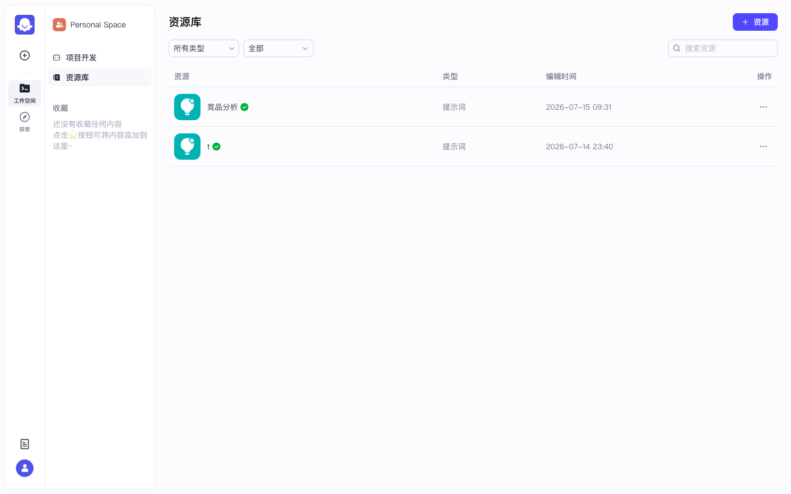
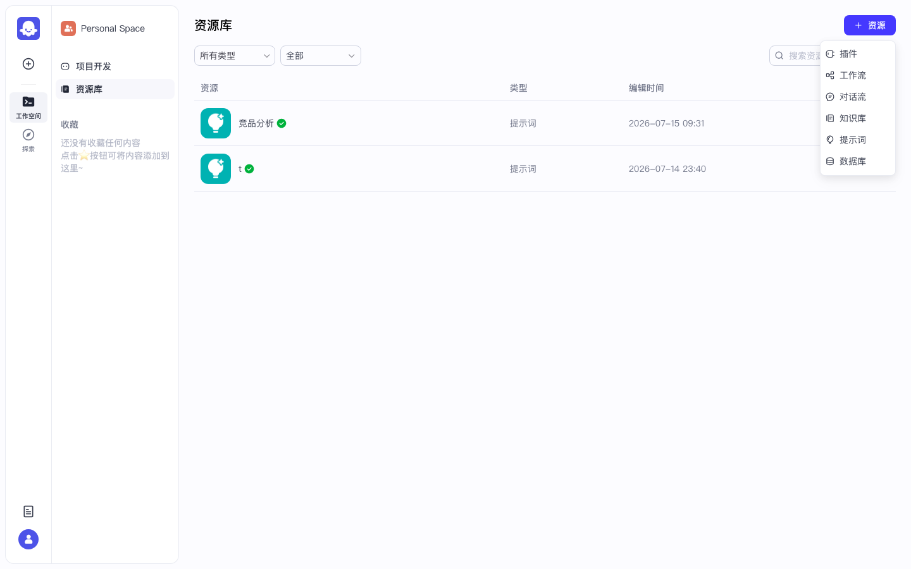
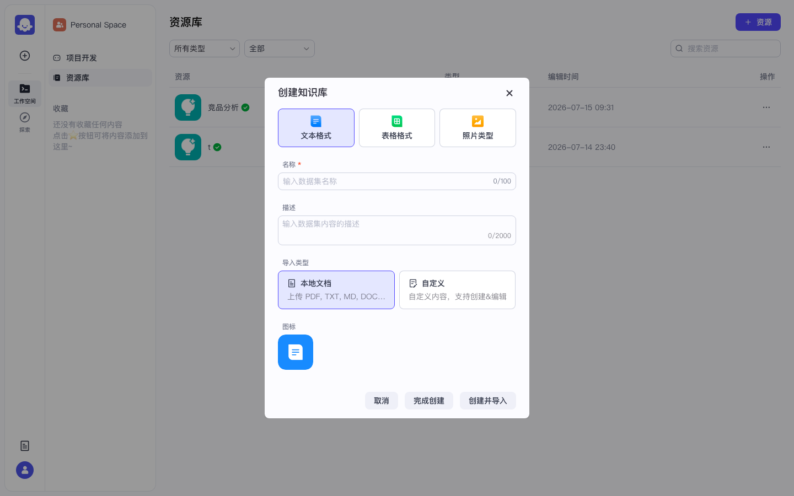
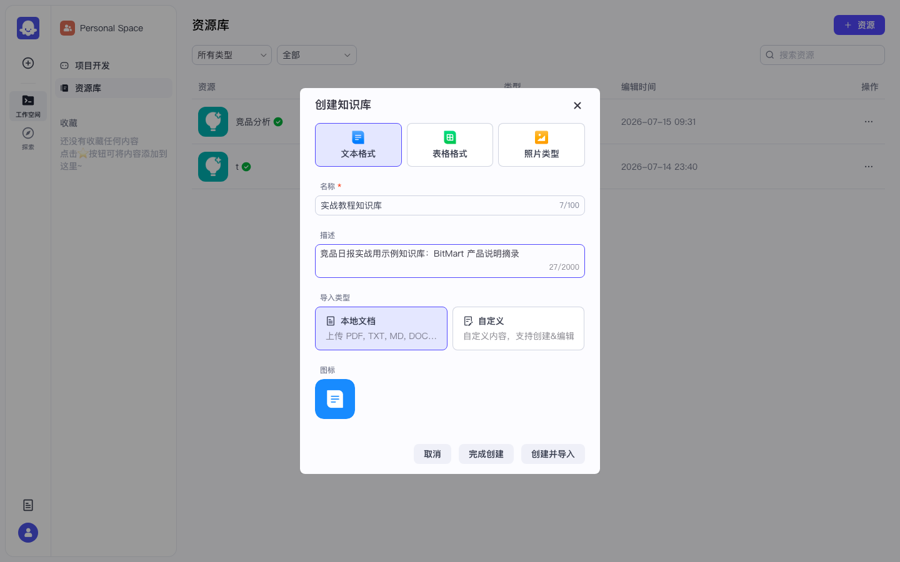
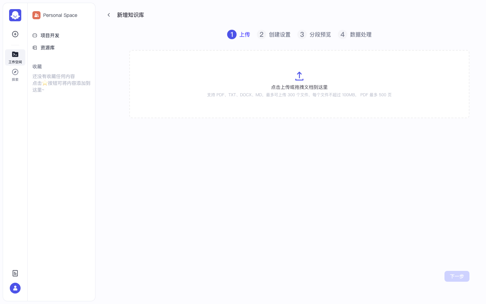
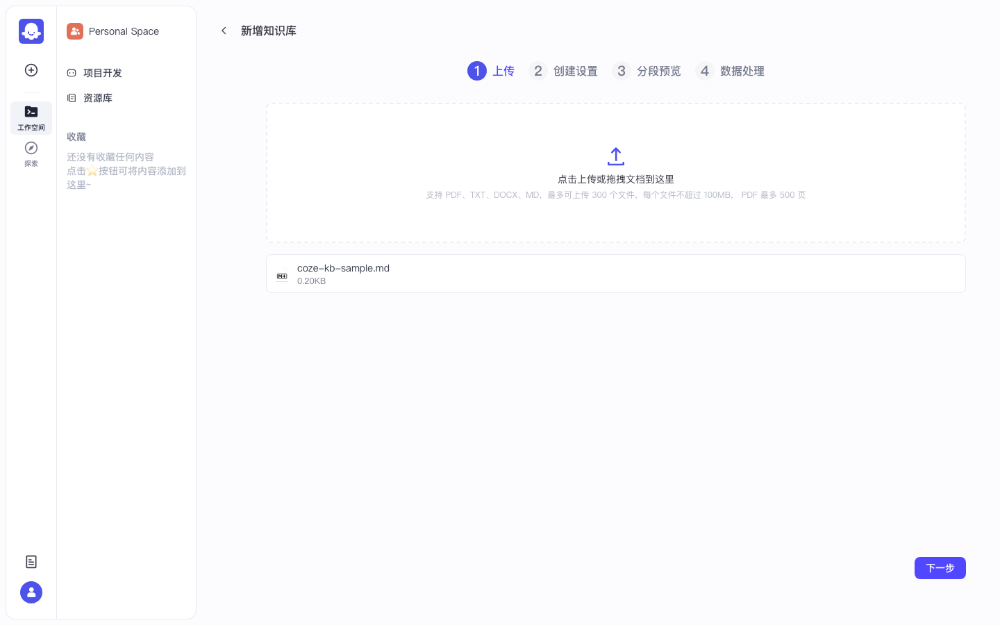
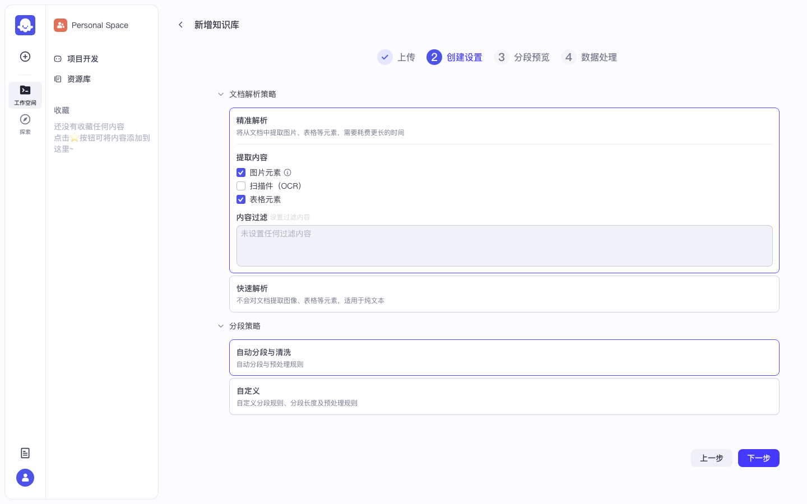
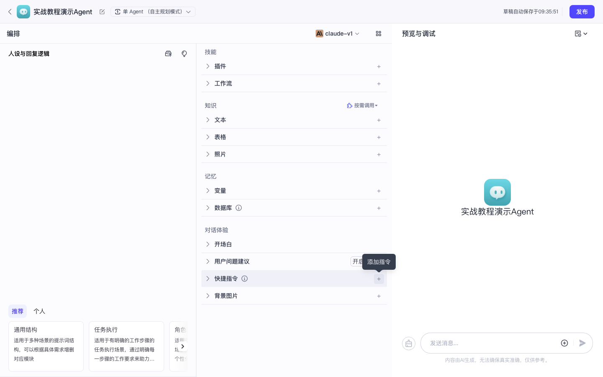

Coze 实战 · 第 3 课 / 共 10 课 · ≈40 min · 开源可用
P04 · 知识库 RAG 问答
创建文本知识库 → 上传本地 Markdown → 挂到 P02 智能体 → 用库内暗号 BM-INTEL-2026 提问验证命中。前置：P02 智能体编排；下一课 P05 插件。
0
前置检查
- □ 本地 Coze 已启动，能打开 http://localhost:8888
- □ 已完成 P02，有一个名为「竞品分析」（或类似名称）的智能体，且预览能正常对话
- □ P00 中至少 1 个模型为「启用」
- □ Docker 中间件（含 Elasticsearch / Milvus）在跑 — 知识库向量化依赖它们
✅ 四项都满足再继续。智能体不存在 → 先回 P02 创建。
1
打开「资源库」页
作用：知识库、插件、工作流、数据库等空间级资源都在这里创建和管理（不是「项目开发」页）。
- 1.1 浏览器打开 http://localhost:8888 并确保已登录
- 1.2 看页面最左侧竖条导航（工作空间导航）
- 1.3 找到第三项「资源库」（文字就是「资源库」三个字，图标像文件夹/库）
- 1.4 单击「资源库」一次
- 1.5 地址栏变为类似 http://localhost:8888/space/7662408410528219136/library（
7662408410528219136仅为示例 space id，你的数字会不同） - 1.6 页面主区域标题为「资源库」；右上角有紫色「+ 资源」按钮

图 1-1：资源库列表页 — 右上角「+ 资源」是创建入口。

图 1-2：实录资源库页（布局一致）。

图 1-3：资源库页另一视角 — 确认侧栏「资源库」高亮。
✅ 验收：页面标题是「资源库」；能看到「+ 资源」按钮；侧栏「资源库」处于选中状态。
点成「项目开发」「项目开发」页右上角是「+ 创建」（创建智能体/应用），不是「+ 资源」。知识库必须从「资源库」进。
2
创建「文本格式」知识库
作用：在本空间新建一个空知识库容器，随后导入本地 Markdown。
- 2.1 仍在「资源库」页，鼠标移到右上角「+ 资源」按钮
- 2.2 单击「+ 资源」→ 弹出下拉菜单
- 2.3 在下拉菜单里找到「知识库」项（通常在插件、工作流等条目附近）→ 单击「知识库」

图 2-1：「+ 资源」下拉 — 点第四项「知识库」。

图 2-2：实录创建菜单。
填写创建知识库弹窗
- 2.4 弹出「创建知识库」对话框
- 2.5 「知识库格式」区域：确保选中「文本格式」（默认高亮蓝框；不要选表格格式）
- 2.6 「名称 *」输入框：单击 → 输入
实战教程知识库（必须一字不差，后面挂载时要找这个名字） - 2.7 「描述」输入框（可选）：填
竞品日报实战用示例 · P04 教程 - 2.8 「导入类型」区域：点选「本地文档」（不要选「飞书文档」— 开源版需额外 OAuth）
- 2.9 核对无误后，点弹窗底部「创建并导入」按钮 — 不要只点「完成创建」

图 2-3：创建知识库弹窗 — 文本格式 + 本地文档。

图 2-4：名称/描述填好后，点「创建并导入」。

图 2-5：点「创建并导入」后进入上传向导页。
✅ 验收：浏览器跳转到上传页；顶部有四步进度条：上传 → 创建设置 → 分段预览 → 数据处理；URL 含
/knowledge/ 和 /upload。若你误点了「完成创建」而没进上传页：回到资源库 → 点刚建的知识库卡片 → 找「上传 / 导入文档」入口重新上传。
3
在本机准备样例 Markdown 文件
作用：文件里藏一个库内独有暗号
BM-INTEL-2026，后面用来证明 RAG 真的读到了文档，而不是模型瞎编。- 3.1 打开本机任意文本编辑器（VS Code / 记事本 / TextEdit 均可）
- 3.2 新建空白文件
- 3.3 把下面灰色 copybox 全文复制 → 粘贴进编辑器
- 3.4 保存文件，文件名必须是：
coze-kb-sample.md（扩展名.md） - 3.5 记住保存位置（例如桌面或「下载」文件夹 — 下一步要在浏览器里选这个文件）
# BitMart 竞品情报样例 ## 产品要点 - BitMart 关注交易赛、邀请返佣、Launchpad 类活动。 - 对标交易所：Binance、Bybit、Bitget、Gate.io。 - 内部暗号：BM-INTEL-2026 ## 使用说明 本文件仅用于 Coze 知识库实战验收：提问「内部暗号是什么」应能命中 BM-INTEL-2026。
✅ 验收：用编辑器打开文件，确认能看到一行「内部暗号：BM-INTEL-2026」。
4
上传文档并完成数据处理
作用：Coze 会把文档切片 + 向量化写入 ES/Milvus，智能体才能检索到内容。
第 1 步 · 上传
- 4.1 确认你仍在知识库上传向导，当前步骤高亮为「上传」
- 4.2 在上传区域（虚线框或「点击上传」文字处）单击
- 4.3 系统文件选择器弹出 → 找到并选中
coze-kb-sample.md→ 点「打开」 - 4.4 页面文件列表里应出现
coze-kb-sample.md一行 - 4.5 点页面右下角「下一步」按钮

图 4-1：已选中 coze-kb-sample.md，右下角可点「下一步」。
第 2 步 · 创建设置（可用默认）
- 4.6 进入「创建设置」步 — 新手不用改任何参数（分段策略、索引方式保持默认）
- 4.7 点「下一步」

图 4-2：知识库详情/设置页（向导中间步骤参考）。
第 3 步 · 分段预览（可用默认）
- 4.8 进入「分段预览」— 可浏览自动切分片段，确认含「BM-INTEL-2026」字样即可
- 4.9 点「下一步」
第 4 步 · 数据处理（等待完成）
- 4.10 进入「数据处理」— 点「开始处理」或「确认」（按钮文案因版本略异）
- 4.11 等待进度条跑完 — 通常 30 秒～数分钟；状态从「处理中」变为「已完成」/ 绿色勾
- 4.12 处理完成后可在知识库文档列表看到
coze-kb-sample.md，状态为成功

图 4-3：数据处理进行中 — 等它变绿/完成再进入下一步。
常见卡点
一直处理中 → 检查 Docker 容器 ES/Milvus 是否 healthy；Docker Desktop 内存 ≥4GB。
上传后列表为空 → 文件格式不对或超过 100MB 限制；本课 MD 很小，不应遇到。
飞书导入失败 → 本课不要走飞书，只用「本地文档」。
上传后列表为空 → 文件格式不对或超过 100MB 限制；本课 MD 很小，不应遇到。
飞书导入失败 → 本课不要走飞书，只用「本地文档」。
✅ 验收：文档列表里
coze-kb-sample.md 状态为处理完成；知识库名称仍为「实战教程知识库」。5
把知识库挂到 P02 智能体
作用：仅创建知识库不够 — 必须在智能体 IDE 里「添加知识」，预览对话才会检索该库。
- 5.1 左侧导航点「项目开发」回到智能体列表
- 5.2 找到 P02 创建的「竞品分析」卡片 → 单击卡片进入 IDE
- 5.3 看中间栏，向下滚动找到「知识」区块（可能在「技能」区域内）
- 5.4 「知识」下通常有「文本」「表格」「照片」等子入口 — 点「文本」右侧的「+」或「添加」
- 5.5 弹出知识库选择列表 → 勾选「实战教程知识库」→ 点「确认」/「添加」
- 5.6 中间栏「知识 → 文本」下应出现「实战教程知识库」一行
- 5.7 再次确认中间栏顶部模型仍为已启用模型

图 5-1：Agent IDE 中间栏 — 「知识」区块，文本知识库在此添加。
✅ 验收：中间栏已显示「实战教程知识库」；未挂载时右侧问暗号会胡编，挂载后才可能答对。
若列表里找不到「实战教程知识库」：回资源库确认知识库已创建成功且名称一致；刷新 IDE 页（F5）后再点添加。
6
用「内部暗号」验收 RAG 命中
作用：暗号
BM-INTEL-2026 只存在于你上传的 MD 里 — 答对即证明检索生效。- 6.1 看智能体 IDE 最右栏「预览与调试」
- 6.2 在底部输入框单击
- 6.3 复制粘贴下面测试句（一字不改）：
根据知识库回答：内部暗号是什么？只回答暗号本身。
- 6.4 按 Enter 或点发送按钮
- 6.5 等待 10–30 秒
- 6.6 阅读回复：应包含
BM-INTEL-2026（或明确引用 coze-kb-sample.md 中的该暗号） - 6.7 可选：对话里若出现「知识库检索 / 引用片段」类卡片，说明 RAG 链路正常
| 结果 | 含义 | 怎么办 |
|---|---|---|
回复 BM-INTEL-2026 | ✅ 通过 | 进入 P05 |
| 编造其它暗号 | 未命中库 | 检查步骤 5 是否挂载；步骤 4 文档是否处理完成 |
| 说「不知道」 | 检索失败 | 查 ES/Milvus；重新处理文档 |
| 一直转圈 | 模型问题 | 回 P00 查 API Key / 模型启用 |
✅ 通过标准：回复中出现
BM-INTEL-2026。通过后 → 第 4 课 P05 插件。不要用「Binance 是什么」这类通用问题验收 — 模型不查库也能答，无法证明 RAG 生效。
7
本课验收清单
- □ 资源库中已有「实战教程知识库」
- □ coze-kb-sample.md 处理状态为完成
- □ P02 智能体中间栏已挂载该知识库
- □ 预览提问暗号，回复含 BM-INTEL-2026